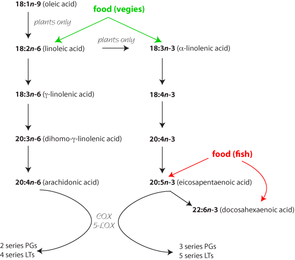

Articular cartilage is made up of large aggregating proteoglycans held together by strings of type 11 collagen with the odd chondrocyte here and there. The chondrocytes are continuously breaking down and synthesising the matrix. Arthritis pushes this dynamic equilibrium towards degradation. Proteoglycans are easily lost and rapidly replaced, collagen loss is slower and probably irreversible.
Matrix metalloproteinases (MMPs) break down the matrix; they are usually in balance with tissue inhibitors of metalloproteinases (TIMPs), which irreversibly block MMPs. Although MMPs can break down proteoglycans, aggrecanases are thought to be mainly responsible. Control of these systems is only starting to be elucidated and offers lots of scope for new drugs as well as understanding how some old ones work (see diagram).
• most of these drugs have only a small effect and are used as dietary supplements for arthritis in dogs and horses
• horses - PSGAGs for sprains
• dogs - many drugs used for immune mediated disease to supplement steroids and allow reduction in dose, EFAs for skin disease
A variety of high molecular weight, long chain mucopolysaccharides which mimic normal components of cartilage are used to treat arthritis in dogs and horses. Most of these are polysulphated glycosaminoglycans. They include various chondroitin sulphates (eg "Adequan", not available in NZ), pentosan polysulphate (not strictly a polysulphated glycosaminoglycan but very similar- it is a semisynthetic pentasaccharide derived from beech wood shavings and present in many grains) and hyaluronic acid (a normal constituent of synovial fluid and cartilage matrix). Heparin is very similar, and most of the synthetic drugs started life as heparin - type anticoagulants in the 1950s.
All these drugs have a wide range of effects and it is not clear at the moment which effects are most important. The effects also appear to be dose related. All work best in mild, early joint disease without destructive changes, although good clinical trials of these drugs are lacking.
Limit cartilage degradation by inhibiting enzymes causing proteoglycan degradation
Support cartilage matrix synthesis by increasing proteoglycans synthesis
Improve the quality of synovial fluid by stimulating the synthesis of hyaluronic acid and has an anti-prostaglandin effect
Improve circulation to the tissues of the joint because of anticoagulant activity
Inhibit fibroblast growth factor and other cytokines. Fibroblast growth factor is required for neovascularisation and for growth of some types of tumour; pentosan is undergoing clinical trials as an anticancer drug in people at the moment.
Hyaluronic acid may also increase the viscoelasticity of synovial fluid.
Probably indirectly affect many aspects of proteoglycan turnover via cytokines
adjunct therapy to correct the cause of osteoarthritis (cruciate or intra articular fracture)
chronic osteoarthritis
primary osteoarthritis
degenerative joint disease
Duration of soundness after treatment increases with the molecular weight of the product from about 50 days to about 160 days.
They are usually given intra-articularly, although they may work after im injection too. They are broken down in the gut, so are not much use orally (see below).
•infection
•animals with clotting defects or traumatic haemorrhage
•liver or kidney disease
Local reaction post-injection when given intra-articularly
Extreme care must be taken to avoid introducing infection when making repeated intra-articular injections.
Heparin like clotting problems and immune mediated hypersensitivity have occurred in people.
These drugs are not cheap.
Glucosamine is the basic building block of GAGs. It is normally made from glucose by chondrocytes, but is preferentially taken up if available, and stimulates the production of GAGs (glucosamine availability is the rate limiting step).
Glucosamine is completely bioavailable from the gut and is practially non toxic, so is sometimes included in horse food.
It has a wide range of useful effects in vitro, and appears to have a small beneficial effect in osteoarthritis in rats and people. It modifies the progress of the disease rather than providing analgesia, so it takes several months for improvements to be seen in people. There are no clinical trials in dogs or horses, but as it probably has a beneficial effect and is unlikely to cause harm, it is becoming more widely used.
Glucosamine is currently being investigated for vCJD in people.
Extracts of green lipped mussels have some anti-inflammatory effects. This is probably produced by a large glycoprotein similar to the other anti-arthritis drugs, but it may also be caused by the copper in the mussel’s blood. Many organic copper compounds have a mild anti-inflammatory effect, probably because copper is an essential part of the enzyme superoxide dismutase, which mops up superoxide ions before they can damage tissue. Copper has been a traditional treatment for arthritis in people and is now being sold for use in dogs. Published evidence of efficacy is lacking.
A wide variety of other drugs are used in people to treat rheumatoid arthritis and are sometimes tried in dogs. These include penicillamine, chloroquine (also used as an antimalarial), sulphasalazine (see gut notes) and gold compounds (see immunosuppressive drugs). Tetracyclines (especially doxycycline) and nicotinamide are sometimes used as immunosupressants / anti-inflammatories in dogs. Their mechanism is unknown.
Phosphodiesterase 4 is involved in inflammation, and its inhibitors can have a useful anti-inflammatory effect, but they also cause vomiting. They are being investigated for asthma in people. A variety of non specific PDE inhibitors are used in animals, which may have some anti-inflammatory effect. The most widely used non specific PDE4 inhibitor used in people is oxpentifylline (pentoxifylline USAN) and it is occasionally used in animals.
There are many m opioid receptors on macrophages in inflammatory lesions for some reason, and opioids have an anti-inflammatory effect in these sites. Morphine is occasionally injected into joints after surgery as an analgesic and anti-inflammatory.
Suramin, used to treat sleeping sickness in people, is an effective inhibitor of fibroblast growth factor, and has been used in people for this effect. It is a nasty drug and best avoided.
Various free radicals, often superoxide ions, are released in inflammation. These are very effective at damaging cell membranes, releasing phospholipids and activating the arachidonic acid cascade. A variety of substances act as antioxidants, vitamin E and glutathione are common examples. Many plants produce compounds to mop up free radicals (they are produced during photosynthesis but also damage plant cells) so many herbal medicines have a mild antioxidant effect. Many also have NSAID compounds present which add to the effect. Plants also produce corticosteroids, and many "antioxidant" herbal medicines produce their anti-inflammatory effect through steroids, either natural or added during adulteration.
The nomenclature of fatty acids is confusing. This structure is usually known as arachidonic acid (eicosatetraenoic acid, 20:4n-6). It has 20 carbon atoms and 4 double bonds which start from carbon 6.
A variety of polyunsaturated fatty acids derived from plants and sea fish have been used as dietary supplements. g-linolenic acid from evening primrose oil or borage oil is popular in dogs, as is oil from cold water fish (eicosapentaenoic acid and docosahexaenoic acid) in people. These have an anti-inflammatory effect by being converted to abnormal prostaglandins and leukotrienes, which do not have such a pro-inflammatory effect. There are a large number of products of COX and 5-LOX which affect inflammation (and many other processes), and the optimal ratio of n-3 to n-6 fatty acids to produce the optimal mixture is not known.
The effect of polyunsaturated fatty acids is small, but can be clinically important, for instance in skin disease in dogs.